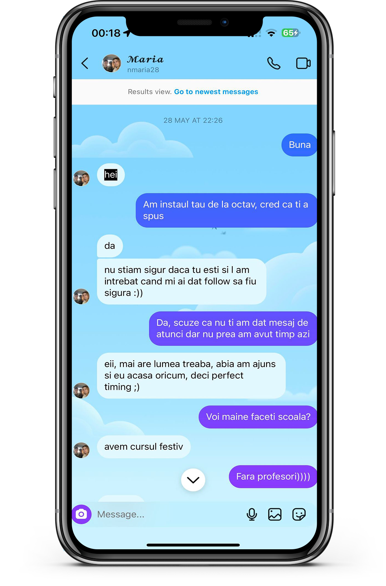
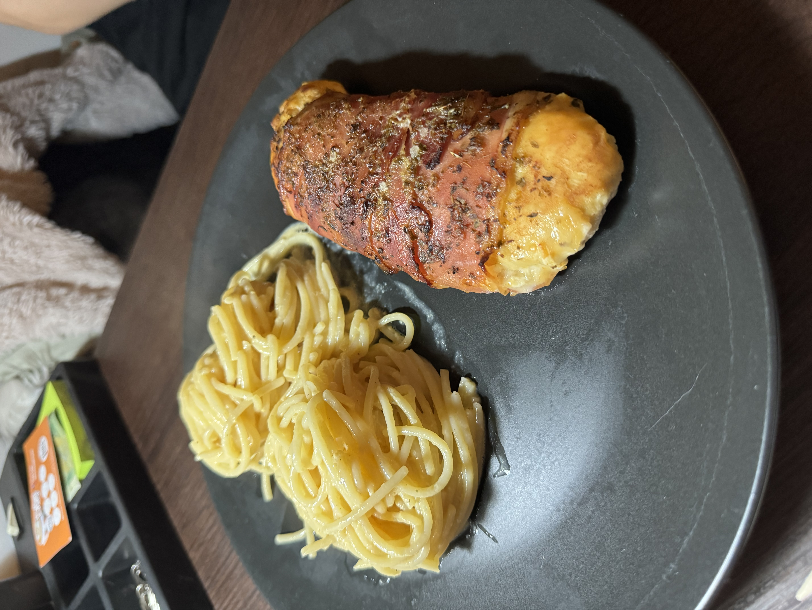

Primele noastre mesaje
28.05.2023
Una din primele noastre zile
03.07.2023

Suntem atat de frumosi impreuna:)
05.07.2023
Our summer night walks
12.07.2023
23.12.2023

You cooked me for the first time
23.12.2023
And it was it was so good!!
Te-am scos putin in oras
30.12.2023
Bun la Amadeus. Mai mergem.
Am mancat in sfarsit la Ursul Carpatin.
02.01.2024
Plangeam de mult ca vreau. Chiar a fost bun si acolo.